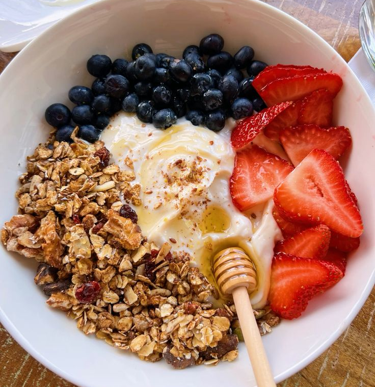
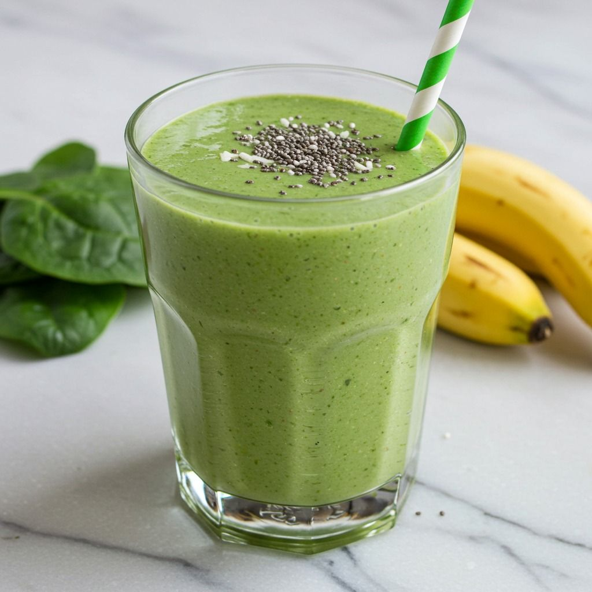
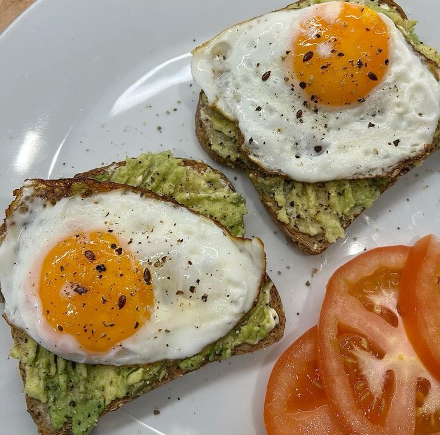

Importancia de la Nutrición Pre-Entrenamiento
Comer adecuadamente antes de entrenar es crucial para maximizar tu rendimiento y recuperación.
Una buena alimentación pre-entrenamiento te proporciona la energía necesaria para realizar
ejercicios intensos
y ayuda a prevenir la fatiga muscular.
Recomendaciones de alimentacion pre-entrenamiento
- Consume una comida equilibrada 1-3 horas antes de entrenar.
- Incluye carbohidratos complejos para energía sostenida.
- Añade proteínas magras para apoyar la reparación muscular.
- Evita comidas muy grasas o altas en fibra justo antes de entrenar.
- Hidrátate bien con agua.
Ejemplos de comidas pre-entrenamiento
- Avena con frutas y un poco de crema de maní.
- Yogur griego con granola, frutas y un toque de miel.
- Batido de proteínas con plátano y espinacas.
- Tostadas integrales con aguacate y huevo.
- Arroz integral con pollo y verduras al vapor.



Beneficios de una buena alimentación pre-entrenamiento
- Mejora el rendimiento durante el ejercicio.
- Reduce la fatiga y aumenta la resistencia.
- Favorece la recuperación muscular post-entrenamiento.
- Ayuda a mantener niveles óptimos de glucosa en sangre.
- Contribuye a una mejor concentración y enfoque durante el entrenamiento.